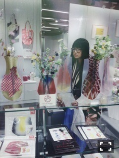
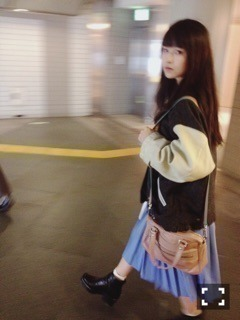
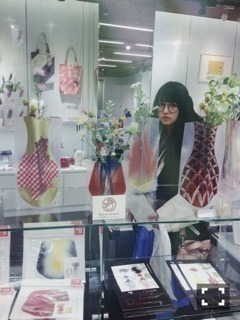

| 2014/11 18 Tue | 頭飲み込んだ。614回目 |

昨日は大阪で似顔絵会と
スペシャルライブがありました。
今回は当選した5名様に
似顔絵を描きました。
なかなかがんばりました。
おめでとうございました！
のんびりしたイベント好き。
そしてスペシャルライブ
選抜アンダー研究生混合チーム
でのライブは初の試みでして、
ファンの皆さんも見ていて
どれも新鮮だったと思います。
私も歌ってて新鮮だった〜
妙な緊張感。
大事な緊張感。
アンダーライブとは違う空気でした

1部2部ともすごい盛り上がったし
2公演じゃ足りん！！って思った
アンダーライブ18公演もやったから、
物足りなく感じてしまいました。
MC中も言ったけども、
こういうライブを定期的にやりたい
選抜もライブをやることが少ない分、
お互い刺激を受けるいい機会だ！
名古屋も絶対楽しいだろうなー
今回はこうやって地方での
全国握手会はなくなったのは
少し寂しいですが、
ライブはやっぱり楽しい。
来てくださったみなさん
ありがとうございました！
オーバーサイズスタジャン
ロングプリーツスカート
買い物いきたぅいいいいいい
寒いーーーー
......
久しぶりに
僕が行かなきゃ誰が行くんだ？
を聴いてたら神宮での光景を
思い出してました。
広い舞台の上に数人で歌って
花道をひとりで歩いて。
小さい舞台でしか伝わらない
熱気もあるかもしれないけど、
広いところをのびのび踊る
気持ち良さも好きだな。
人との距離が遠くて、
自分の空間が大きくて
すごく贅沢な気持ちになる。
EX大衆にアンダーライブ特集
載ってます。読んでほしい！な！
もう次のライブに向けて
やる気満々だよーああ楽しみいいい
ライブでの私は本当に
のびのびしてると自分でも思う笑

乃木どこクイズ王後半戦
残念ながら負けてしまった。
でも勉強になった！！リトマス紙
次もやることになったら
古川さんきっと苔について
詳しくなってるんだろうなあ。
この放送を機に視聴者の方に
苔の魅力が伝わったかなーーーー
私はもっと苔が好きになったさ！

写真は内容とまったく関係ないや
まりか
コメント(699)
2014/11/18 09:48